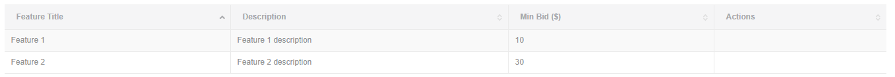
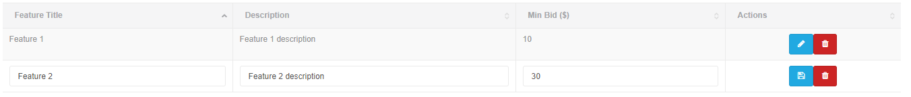
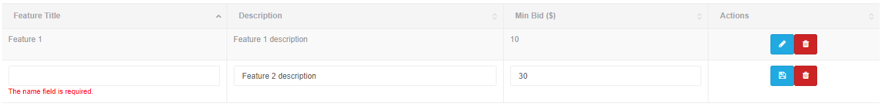

JQuery Editable tables is a JQuery based javascript library which turns ordinary HTML tables into editable row. It allows users to quickly edit records in the table and save the data into database. It requires JQuery, supports but does not required bootstrap and font-awesome icons and Laravel MessageBag response for errors.
For example, Given an ordinary HTML table like

Is turned into

Validation errors on update and delete are also supported

bower install jquery-editabletable
Or download/clone code from github repo
https://github.com/dasatti/jquery-editable-table
| Name | Phone Number | Age | Actions |
|---|---|---|---|
| Danish | 12345678 | 30 | |
| Ahmed | 987654321 | 35 |
After applying Editable Tables Plugin it turns into following :
| Name | Phone Number | Age | Actions |
|---|---|---|---|
| Danish | 12345678 | 30 | |
| Ahmed | 987654321 | 35 |
<table id="table">
<tr>
<td data-editable="name">Danish</td>
<td data-editable="phone">923125511678</td>
<td data-editable="age" data-editable-type="number">30</td>
<td><!-- Extra column for buttons--></td>
</tr>
</table>
$('#table').editableTable({
//configuration variables will go here, all of them are optional
//Update callback
onUpdate : function(data, callback){
//perform ajax or what ever with the data
//execute the callback to inform editable table about update status, For ajax place it in success callback
callback({
success : 1 //1 or 0 | required
errors : ["Error 1", "Error 2"] //Put errors here is there was some error in update | optional
errorsBag : {
// Laravel 5 standard ErrorBag response | optional
field_1_name : ["Error 1", "Error 2"],
field_2_name : ["Error 1", "Error 2"]
}
})
},
//Delete callback
onDelete : function(recordId, row, callback){
success : 1, //1 or 0 | required
errors : ["Error 1", "Error 2"] //Put errors here is there was some error in update | optional
errorsBag : {
// Laravel 5 standard ErrorBag response | optional
field_1_name : ["Error 1", "Error 2"],
field_2_name : ["Error 1", "Error 2"]
}
}
});
{
labels : false, //Enable show labels for edit and delete buttons
editLabel : 'Edit', //Edit button label
editBtnClass : 'btn btn-info', //Edit button class
editIcon : 'fa fa-pencil', //Edit button icon class
updateLabel : 'Update', //Update button label
updateIcon : 'fa fa-save', //Update button icon class
deleteLabel : 'Delete', //Delete button label
deleteIcon : 'fa fa-trash', //Delete button icon class
deleteBtnClass : 'btn btn-danger', //Delete button class
editType : 'row', //Edit mode
formInputClass : 'form-control',//Inputs class
deleteMsg : 'Are you sure you want to delete this record?', //On delete confirmation message
onUpdate : null, //On update callback
onDelete : null, //On delete callback
errorColor : 'red' //Error messages text color
}